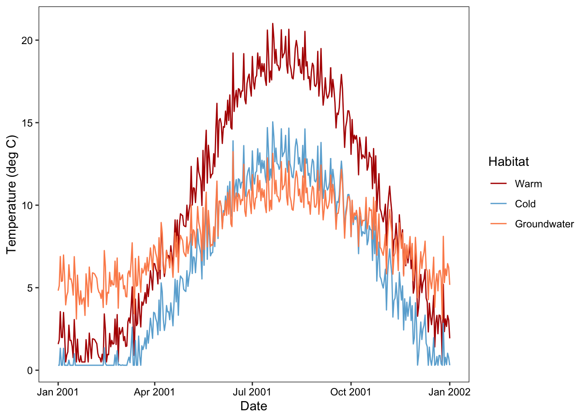
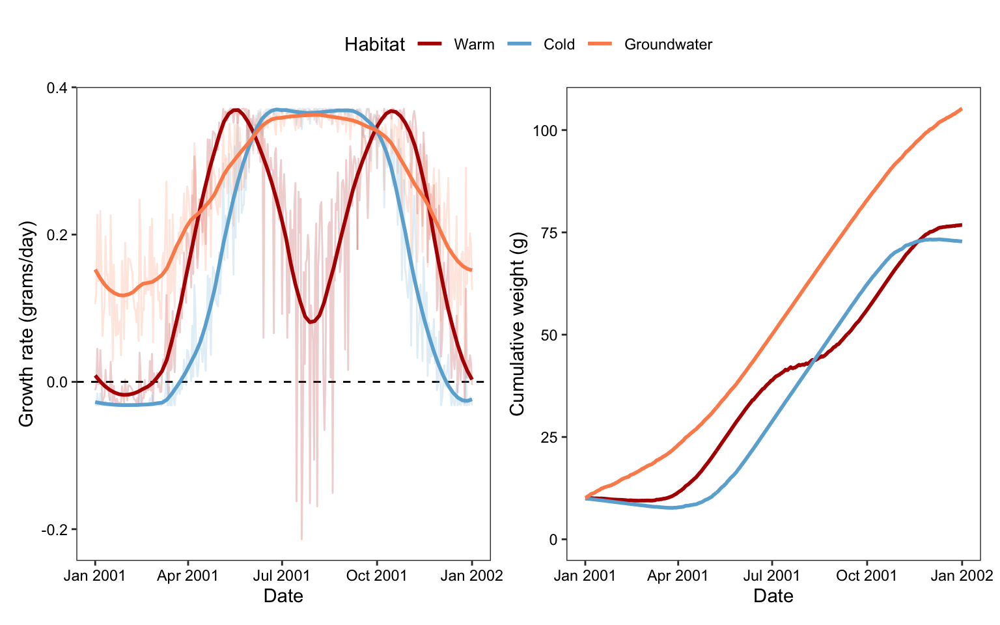
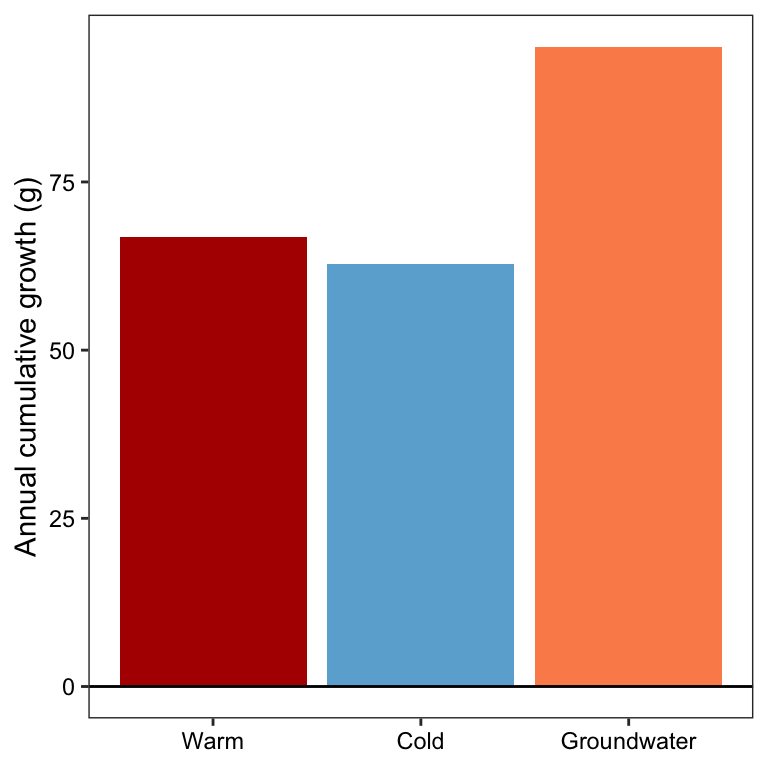
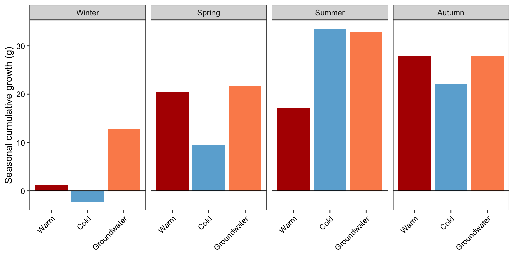

Code
library(tidyverse)
library(lubridate)
library(patchwork)Derive the growth regime and growth potential for a 10 gram fish, sensu Lundberg et al. (2026, Fisheries) and Armstrong et al. (2021, Nature Climate Change). For simplicity, I did not simulate changing growth potential due to increase in fish mass over the course of the year, as in the two referenced papers. This prevents allometric scaling of metabolism from confounding the effects temperature on growth potential. Growth potentialy is really a proxy for total population production, so realistic body size estimates (for which allometric scaling would be important) are not necessarily what we are aiming for.
library(tidyverse)
library(lubridate)
library(patchwork)Load pre-calculated growth
load("data/wt.growth.array.cutt.RData")# these sequences need to match those used to generate the growth look-up array
waterTemps <- cbind("pid" = seq(1, length(seq(0.1, 25, 0.01))),"WT" = seq(0.1, 25, 0.01))
pvals <- seq(0.1, 1.0, 0.1)
weights <- c(10)
# color scheme
hab_cols <- c("Cold" = "#6BAED6", "Warm" = "#B30000", "Groundwater" = "#FC8D59")Create function to simulation temperature time series data.
build_habitat <- function(nyears = 1, mindate = as.Date("2001-01-01"), # timeline
base_temp = 11, amplitude = 12, peak_doy = 213, # sine wave parameters
temp_min = 0.5, temp_max = 25, # bounds to keep temps within reasonable range
noise_sd = 1
) {
# ── Timeline ────────────────────────────────────────────────────────────────
maxdate <- mindate + years(nyears)
dates <- seq(mindate, maxdate, by = "day")
n <- length(dates)
doy <- as.numeric(format(dates, "%j"))
# ── Temperature ─────────────────────────────────────────────────────────────
# Simulate time series data: sine wave + noise, floored at temp_min, capped at 25 °C
sim_temp <- function(doy, base_temp, amplitude, peak_doy, temp_min, temp_max, noise_sd, n) {
phase <- peak_doy - 365 / 4 # shift so sin() peaks on peak_doy
temps <- base_temp + amplitude * sin(2 * pi * (doy - phase) / 365)
noise <- rnorm(n, 0, noise_sd)
pmax(temp_min, pmin(temp_max, temps + noise))
}
set.seed(123)
simulated_temp <- sim_temp(doy, base_temp, amplitude, peak_doy, temp_min, temp_max, noise_sd, n)
habitat_df <- tibble(
date = dates,
doy = doy,
dayofsim = seq_along(dates),
temp = round(simulated_temp, digits = 2),
)
habitat_df
}Simulate temperatures
habitat_df <- bind_rows(build_habitat(base_temp = 10, amplitude = 9) %>% mutate(habitat = "Warm"),
build_habitat(base_temp = 6, amplitude = 7, temp_min = 0.3) %>% mutate(habitat = "Cold"),
build_habitat(base_temp = 8, amplitude = 3) %>% mutate(habitat = "Groundwater")) %>%
mutate(habitat = factor(habitat, levels = c("Warm", "Cold", "Groundwater")))Plot simulated temperatures
ggplot(habitat_df, aes(x = date, y = temp, color = habitat)) +
geom_line() +
scale_color_manual(values = hab_cols, name = "Habitat") +
labs(x = "Date", y = "Temperature (deg C)") +
theme_bw() + theme(axis.text = element_text(color = "black"), panel.grid = element_blank())
Look up growth (g/g/day) for each daily temperature, at a fixed 10 g fish mass and a chosen proportion of maximum consumption (p-value).
baseline_mass <- 10
p_use <- 1.0 # p-value (proportion of Cmax); 1.0 = maximum ration
p_idx <- which(near(pvals, p_use))
w_idx <- which(weights == baseline_mass)
habitat_df <- habitat_df %>%
mutate(
# match each temperature to its row in the look-up grid (0.01 deg C resolution)
temp_idx = match(round(temp, 2), round(waterTemps[, "WT"], 2)), # corresponding temperature index
growth_ggd = wt.growth[temp_idx, p_idx, w_idx], # growth in grams/gram/day (relative or % growth)
growth_gd = growth_ggd * baseline_mass # growth in grams/day (absolute growth)
)
stopifnot(!anyNA(habitat_df$growth_ggd))
summary(habitat_df$growth_ggd) Min. 1st Qu. Median Mean 3rd Qu. Max.
-0.021374 0.006632 0.023799 0.020474 0.034958 0.037103 Convert daily growth to a trajectory of body mass. Because the look-up is for a fixed 10 g fish, daily absolute growth (g/d) is summed rather than compounded.
habitat_df <- habitat_df %>%
group_by(habitat) %>%
arrange(date, .by_group = TRUE) %>%
mutate(
cum_growth_g = cumsum(growth_gd), # cumulative growth (g) through each day
mass_g = baseline_mass + cum_growth_g # body mass at end of each day
) %>%
ungroup()Show growth regimes and body size trajectories
p1 <- ggplot(habitat_df, aes(x = date, y = growth_gd, color = habitat)) +
geom_hline(yintercept = 0, linetype = "dashed") +
geom_line(alpha = 0.2) +
geom_smooth(se = FALSE, span = 0.2) +
scale_color_manual(values = hab_cols, name = "Habitat") +
labs(x = "Date", y = "Growth rate (grams/day)") +
theme_bw() + expand_limits(y = 0) +
# legend keys differ from p2 (alpha, smooth), so patchwork can't merge them; keep p2's only
theme(legend.position = "none") + theme(axis.text = element_text(color = "black"), panel.grid = element_blank())
p2 <- ggplot(habitat_df, aes(x = date, y = mass_g, color = habitat)) +
geom_line(linewidth = 1) +
scale_color_manual(values = hab_cols, name = "Habitat") +
labs(x = "Date", y = "Cumulative weight (g)") +
# the collected legend is taken from p2, so set its layout here
guides(color = guide_legend(nrow = 1, title.position = "left")) +
theme_bw() + expand_limits(y = 0) + theme(axis.text = element_text(color = "black"), panel.grid = element_blank())
(p1 + p2) +
plot_layout(guides = "collect") +
plot_annotation(theme = theme(legend.position = "top"))
Sum daily growth (g/d) over the year and within meteorological seasons (winter = Dec-Feb, spring = Mar-May, summer = Jun-Aug, autumn = Sep-Nov). The final day of the simulation (2002-01-01) is dropped so the year has 365 days.
growth_2001 <- habitat_df %>%
filter(year(date) == 2001) %>%
mutate(season = factor(
case_when(
month(date) %in% c(12, 1, 2) ~ "Winter",
month(date) %in% 3:5 ~ "Spring",
month(date) %in% 6:8 ~ "Summer",
month(date) %in% 9:11 ~ "Autumn"
),
levels = c("Winter", "Spring", "Summer", "Autumn")
))
annual_growth <- growth_2001 %>%
group_by(habitat) %>%
summarise(growth_g = sum(growth_gd), .groups = "drop")
seasonal_growth <- growth_2001 %>%
group_by(habitat, season) %>%
summarise(growth_g = sum(growth_gd), .groups = "drop")Annual growth potential: the groundwater habitat provides the greatest growth potential (~95 g), roughly 40% more than the warm habitat (~67 g) and 50% more than the cold habitat (~63 g).
ggplot(annual_growth, aes(x = habitat, y = growth_g, fill = habitat)) +
geom_col() +
geom_hline(yintercept = 0) +
scale_fill_manual(values = hab_cols, guide = "none") +
labs(x = NULL, y = "Annual cumulative growth (g)") +
theme_bw() + theme(axis.text = element_text(color = "black"), panel.grid = element_blank())
Seasonal growth potential: the habitats differ mainly in when they provide growth. The groundwater habitat is the only one with substantial growth in winter (~13 g), because its mild, stable temperatures keep fish near positive growth year-round; the warm habitat gains little (~1 g) and the cold habitat loses mass (~-2 g). In spring, the warm and groundwater habitats outperform the cold habitat, which is still warming. Summer is the season of greatest contrast: the cold and groundwater habitats reach their highest growth (~33 g), while the warm habitat gains only about half as much (~17 g), as summer temperatures approach the upper end of the growth curve. In autumn, growth is similar in the warm and groundwater habitats (~28 g) and slightly lower in the cold habitat (~22 g). Overall, the warm habitat’s annual growth potential is only slightly higher than the cold habitat’s, because its summer and winter limitations offset its spring and autumn advantage.
ggplot(seasonal_growth, aes(x = habitat, y = growth_g, fill = habitat)) +
geom_col() +
geom_hline(yintercept = 0) +
facet_wrap(~ season, nrow = 1) +
scale_fill_manual(values = hab_cols, guide = "none") +
labs(x = NULL, y = "Seasonal cumulative growth (g)") +
guides(x = guide_axis(angle = 45)) +
theme_bw() + theme(axis.text = element_text(color = "black"), panel.grid = element_blank())